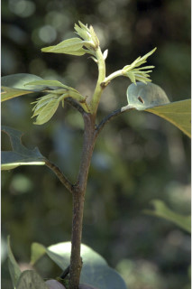
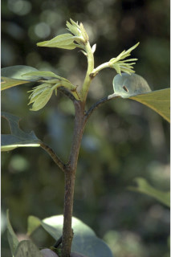
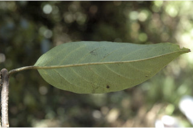
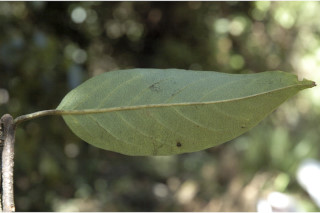

| Leaves : | Leaves simple , alternate , distichous ; stipule caducous and leaving scar ; petiole 0.6-2.8 cm long, canaliculate , glabrous ; lamina 7-17 x 2.5-6.5 cm, ovate to ovate -lanceolate, apex gradually acuminate with blunt tip, twisted, base rounded or asymmetric , sometimes attenuate , margin entire , coriaceous , glabrous , a pair of circular glands usually present near base beneath, sometimes present in upper half, rarely absent; midrib canaliculate above, reddish beneath; secondary_nerves 6-8 pairs, reddish when young, ascending; tertiary_nerves reticulo-percurrent . |


 

 
